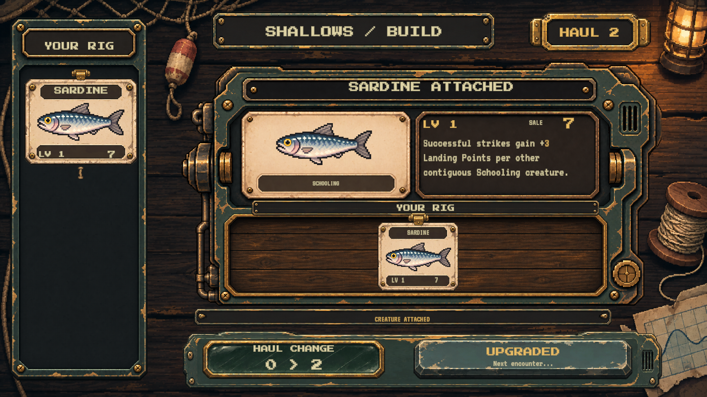
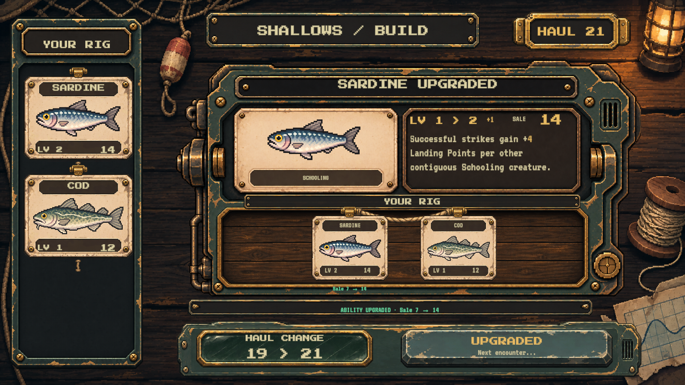

Native Unity frames from a real expedition. These videos have no sound: the placeholder cues (existing Travel, Attach, SlotTick and PayoutSmall) play only in the game. Both beats can be skipped with Space or SKIP. Failure still pays the full haul under the GDD rules. The expedition ends and the creature is not acquired.

